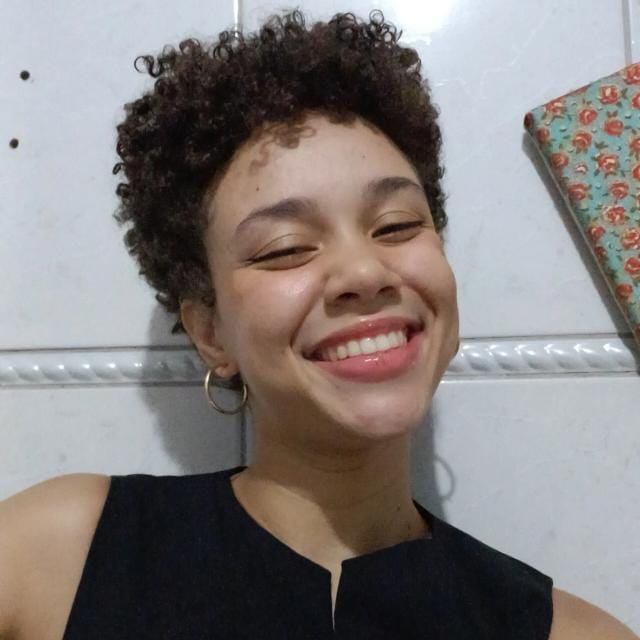
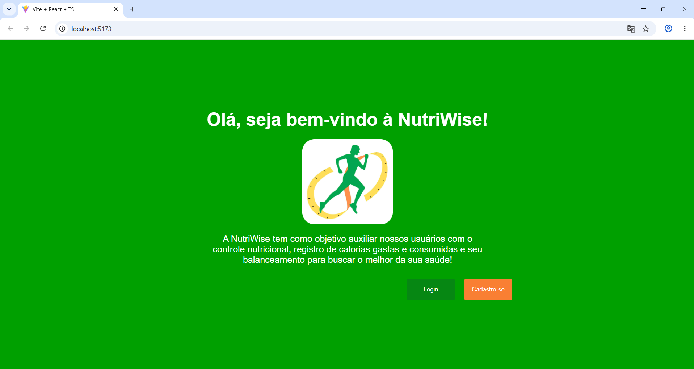
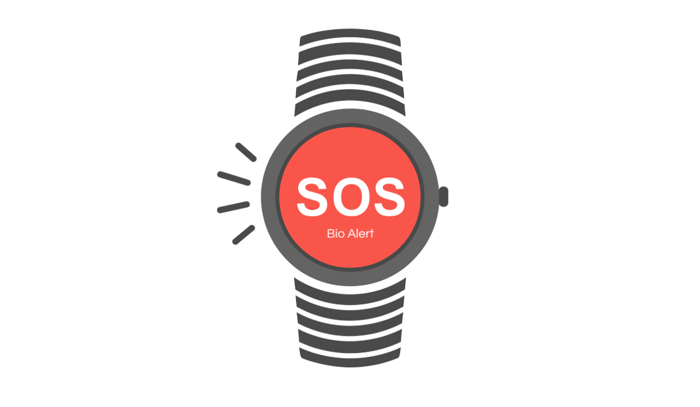
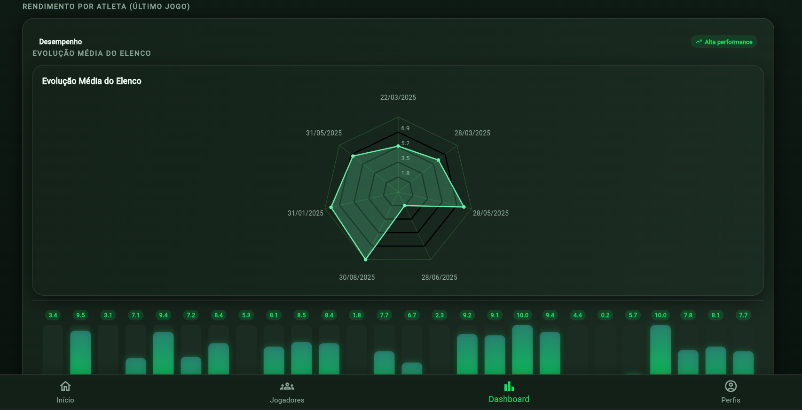
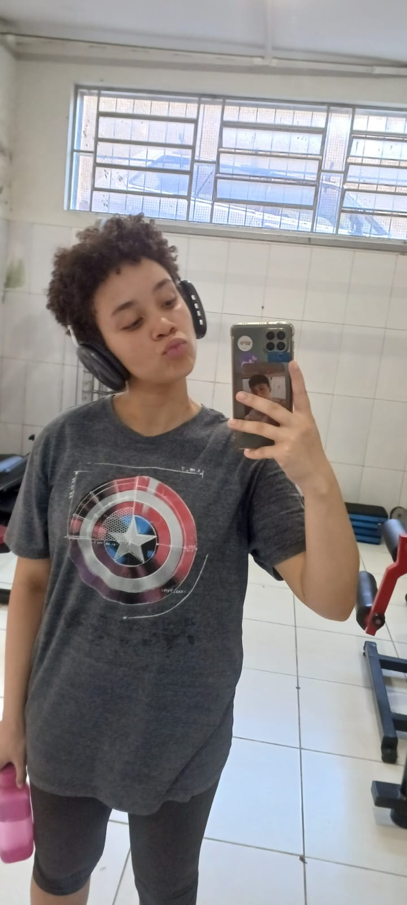

INNOVATECH LABS
semestre 1Curso de conceitos básicos de Metodologia SCRUM, gerando certificação e um questionário com seleção aleatória de questões para teste do conhecimento do aluno. Posição na equipe: SCRUM Master
Ver mais
Meu nome é Luana Pinheiro, sou
uma Desenvolvedora Web e
Mobile Fullstack
Curso de conceitos básicos de Metodologia SCRUM, gerando certificação e um questionário com seleção aleatória de questões para teste do conhecimento do aluno. Posição na equipe: SCRUM Master
Ver maisNutri-Wise é uma aplicação Web de registro de calorias, controle e cálculo de IMC a partir do registro de peso, altura e gênero do usuário. Posição na equipe: SCRUM Master
Ver mais
Aplicação Web conectada a um sensor localizado no Lago de Furnas, para auxiliar pescadores com dados atualizados do local, clima e velocidade do vento. Posição na equipe: SCRUM Master
Ver maisBioAlert é um app mobile desenvolvido para registrar queda de idosos a partir de um relógio e possibilitar a chamada de emergência para o SAMU. Posição na equipe: Desenvolvedora Web
Ver mais
Aplicação web e mobile para comparação, substituição e análise do desempenho dos jogadores de um time. Posição: Dev Backend e Frontend
Ver mais
Além da minha experiência com programação, no tempo livre gosto muito de assistir filmes e sou uma grande fã dos quadrinhos da Marvel. Também gosto de ouvir músicas e ir à academia frequentemente.
Sou alegre e determinada. Gosto muito de aprender, aprimorar minhas habilidades e projetos para me tornar melhor do que sou hoje. Tenho muito orgulho de poder estudar na área de tecnologia e da carreira que tenho pela frente.
Baixar currículo

LinkedIn: https://www.linkedin.com/in/luana-pinheiro-4bb92526b
Github: https://github.com/Luana873
e-mail: l9889641@gmail.com